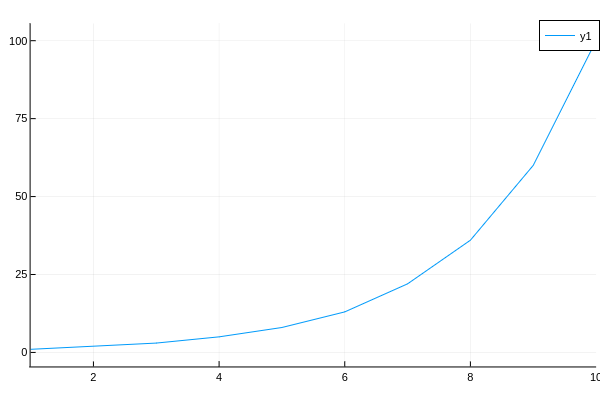

TunedModel

1. 什么是TunedModel
为了得到更好的模型，我们需要调试模型的参数
还好MLJ为我们提供了TunedModel，我们要做的就是把原来的模型包装起来，进行调试
resampling = resampling,
measure = measure,
rannge = range,
tuning = tuning,
weights = weights)
self_tuning_mach = machine(self_tuning_model, train_features, train_labels)
2. 怎么调优模型
最重要的是参数范围range，参数范围的搜索策略tuning和判断最优结果的指标measure
2.1 range
range需要指定model,model的参数:param，范围和取值(scale)
scale 最近我好像弄懂了，具体指取值的做法，比如:linear指均匀取值，:log10指这种情况（瞎猜的），虽然取值时的横轴还是1, 2, 3, 4，但是取值的纵轴却是指数级变化，可以自己画一下看看
r = range(Int, :junk, lower = 1, upper = 100, scale = :log10)
plot(1:10, iterator(r, 10))
 [数值]单个参数
range = r,
[数值]多个参数
r2 = range(model, :param2, lower, upper, scale)
range = [r1, r2]
[特殊]
补充
如果没有指定scale的话
If scale is unspecified, it is set to :linear, :log, :logminus, or :linear, according to whether the interval (lower, upper) is bounded, right-unbounded, left-unbounded, or doubly unbounded, respectively. Note upper=Inf and lower=-Inf are allowed.
例子 example1: 对范围进行取值
clf = LogisticClassifier()
# 调参的时候记得看这些参数是什么哟
r_lambda = range(clf, :lambda, lower = -1.0, upper = 5.0, scale = :linear)
r_gamma = range(clf, :gamma, lower = -1.0, upper = 10.0, scale = :linear)
10-element Array{Float64,1}:
0.01
1.12
2.23
3.34
4.45
5.56
6.67
7.78
8.89
10.0
example2: range范围内参数不够时
10-element Array{Int64,1}:
1
2
3
4
5
6
7
8
9
10
2.2 tuning
确定好调参的范围range后，接下来是怎么寻找参数调试的调整策略tuning了
tuning有两种策略，网格搜索和随机搜索
2.2.1 Grid
Grid(goal=nothing, resolution=10, rng=Random.GLOBAL_RNG, shuffle=true)
specified number of grid points as goal, or using a specified default
resolution in each numeric dimension.
可以参考这篇文章
网格你们知道吧，我这拿两个范围组成的网格举例

-
goal
goal就是上面那个网格所有的格子数
-
resolution
resolution指每个范围（即每个轴）分成多少块 ps: 如果你提供的范围数据量不够的话，就算你设了再大的resolution，最终resolution还是以这个范围的最大可分的次数为准
example
在调整时设置两个范围，TunedModel需要训练的模型总量n与Grid的关系（其实就是上面图片的有多少个横的单元格，有多个竖的单元格，把他们乘起来）**
ps: @doc TunedModel 你会发现n = default_n(tuning, range)
clf = LogisticClassifier()
# 调参的时候记得看这些参数是什么哟
r_lambda = range(clf, :lambda, lower = -1.0, upper = 5.0, scale = :linear)
r_gamma = range(clf, :gamma, lower = -1.0, upper = 10.0, scale = :linear)
单个范围调整时的训练模型数
tuning = Grid(resolution = 10)
default_n(tuning, r_lambda) == 10 # true
default_n(tuning, r_gamma) == 10 # true
default_n(tuning, range(Int, :junk, lower=1, upper=5)) == 5 # true
多个范围调整时的训练模型数
# 范围不够用时
r_penalty = range(clf, :penalty, values = [:l1, :l2]) # iterator最大能取两个
default_n(tuning, [r_penalty, r_gamma]) == 20 # true 2 x 10
2.2.2 RandomSearch
RandomSearch(bounded=Distributions.Uniform, positive_unbounded=Distributions.Gamma, other=Distributions.Normal, rng=Random.GLOBAL_RNG)
hyperparameter domains, with customizable priors in each dimension.
TODO 解释Random怎么取值
2.3 measure
measure是为了衡量模型调整参数后的好坏而引入的指标，我们只讨论分类和回归的情况
文档在这里
如果我们是指了多么measure，那么只有第一个measure会被作为评估的指标，其他的指标会在模型训练的报告中呈现
2.4 weights
也可以指定权重，用数组向量表示
2.5 resampling
内置的重采样策略有三种，
Holdout: 将数据集分为train和test两部分，比例由fraction_train指定
CV: K折交叉验证
StratifiedCV: K折分层交叉验证
三种重采样方法都可以指定shuffle = true来指定，同时可以设定可重复使用的随机数种子
具体用法看这里
rng = StableRNG(1234)
3. 怎么得到最优模型
best_model = fitted_params(sefl_tuning_mach).best_model
4. 接下来的工作
如果我们对这个模型有疑问怎么办？
我们可以对这个最优模型进行评估，或是通过learning_curve来观察训练过程
当然，evaluate和learning_curve会单独写文档，因为内容有点多
5. 贴个代码试试
5.1 先试试单个参数调整
X = MLJ.table(rand(100,10))
y = 2X.x1 - X.x2 + 0.05 * rand(100)
tree_model = @load DecisionTreeRegressor
# 调整单个参数
r = range(tree_model, :min_purity_increase, lower = 0.01, upper = 1.0, scale = :linear)
self_tuning_tree_model = TunedModel(model = tree_model,
resampling = CV(nfolds = 3),
tuning = Grid(resolution = 10),
range = r,
measure = [rms, l1]
self_tuning_tree = machine(self_tuning_tree_model, X, y)
fit!(self_tuning_tree)
best_model = fitted_params(self_tuning_tree).best_model
这是tree_model
DecisionTreeRegressor(
max_depth = -1,
min_samples_leaf = 5,
min_samples_split = 2,
min_purity_increase = 0.0,
n_subfeatures = 0,
post_prune = false,
merge_purity_threshold = 1.0) @371
这是best_model
DecisionTreeRegressor(
max_depth = -1,
min_samples_leaf = 5,
min_samples_split = 2,
min_purity_increase = 0.01,
n_subfeatures = 0,
post_prune = false,
merge_purity_threshold = 1.0) @408
好吧，好像没什么变化
5.2 再试试多个参数调整，顺便强化一下tree_model，进化成forest
没办法，我没系统学过决策树，不知道里面的参数含义
r1 = range(forest_model, :(atom.n_subfeatures), lower = 1, upper = 9)
r2 = range(forest_model, :bagging_fraction, lower = 0.4, upper = 1.0)
self_tuning_forest_model = TunedModel(model = forest_model,
tuning = Grid(resolution = 10),
resampling = CV(nfolds = 6),
range = [r1, r2],
measure = rms)
原来的forest_model
DeterministicEnsembleModel(
atom = DecisionTreeRegressor(
max_depth = -1,
min_samples_leaf = 5,
min_samples_split = 2,
min_purity_increase = 0.0,
n_subfeatures = 0,
post_prune = false,
merge_purity_threshold = 1.0),
atomic_weights = Float64[],
bagging_fraction = 0.8,
rng = Random._GLOBAL_RNG(),
n = 100,
acceleration = CPU1{Nothing}(nothing),
out_of_bag_measure = Any[]) @723
最优模型
DeterministicEnsembleModel(
atom = DecisionTreeRegressor(
max_depth = -1,
min_samples_leaf = 5,
min_samples_split = 2,
min_purity_increase = 0.0,
n_subfeatures = 9,
post_prune = false,
merge_purity_threshold = 1.0),
atomic_weights = Float64[],
bagging_fraction = 0.8,
rng = Random._GLOBAL_RNG(),
n = 100,
acceleration = CPU1{Nothing}(nothing),
out_of_bag_measure = Any[]) @027
娘的，好像还是没什么变化